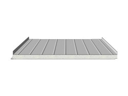
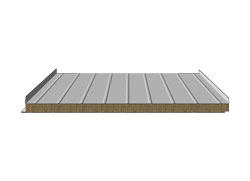
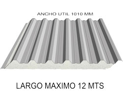
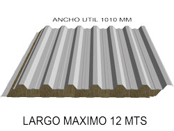
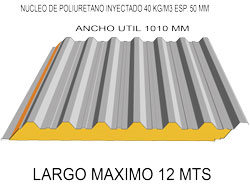
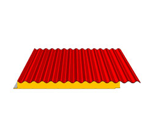

Estos paneles aislantes son utilizados para techos, hay 3 tipos de conformación de chapa hacia
el exterior
(Trapezoidal, Sinusoidal y Engrafado Draco). Donde tienen una cara externa con una forma
especial para su
estética, y la otra cara interna, el cielorraso, una forma mas plana. Los mismos están
preparados para tener
muy baja inclinación dándole a los mismos una total hermeticidad al pasaje del agua hacia el
interior.
Frigolit "D"

Poliestireno

Lana MineralPoliuretano y Poliisocianurato
Descripción general:
Panel constituido con dos chapas metálicas de calibre numero 25 de 0,5mm de espesor. Con
forma Draco en la cara externa y chapa conformada en la cara interna, como por ejemplo el
cielorraso. Los núcleos pueden ser de PUR, PIR, EPS y LM. Los anchos útiles son de 1000mm y
los largos se adecuan a la necesidad del uso variando desde 1200mm hasta 13500mm de largo
dependiendo de su núcleo. Al ser la chapa Draco en una de sus caras, se engrafa entre si
dándole al mismo una excelente hermeticidad ya que no tiene ningún tipo de perforaciones
hacia el exterior.
Características de la chapa:
Chapa galvanizada prepintada, chapa cincalum, chapa acero inoxidable.
Revestimiento: Chapa en ambas caras.
Especificación de montaje: Se montaran en cubiertas de galpones con un ángulo de
inclinación mínimo de 5% a 7% para el
escurrimiento del agua. Teniendo una luz de apoyo máxima de 2,2mts dependiendo de la zona
donde se vaya a utilizar dicho panel. El mismo va anclado por medio de grampas tomadas
entre panel a las vigas y quedando engrafada dentro del engrafe de unión.
Encastre: El encastre es a tope y la cresta superior va engrafada entre si, apta para
techo y/o
paredes laterales.
Tabla de cargas admisibles para paneles:
Núcleos:
Poliuretano (PUR):
Descripción:
Es un panel que contiene un núcleo de Poliuretano inyectado del tipo
Autoextinguible con la clasificación R1 de la norma brasilera MB 1562
siendo su peso especifico de 40kg/m3 con sus distintos espesores a solicitud
del cliente. El espesor puede ser desde 50mm hasta 100mm.
Aplicaciones:
Es un panel principalmente para montarlo en galpones donde se quiere obtener
una temperatura constante dentro del mismo.
Poliisocianurato (PIR):
El núcleo de este panel, Poliisocianurato, esta fabricado bajo nomas ASTM C591/C518
Clase M1 para resistencia al fuego, siendo este difícilmente combustible. Una
densidad de 40kg/m3. Con un espesor de 50mm a 100mm.
Poliestireno (EPS):
Es un panel construido con núcleo de Poliestireno expandido con una densidad de
20kg/m3 según normas DIN 4102 del tipo Autoextinguible. Con un espesor entre 50mm y
100mm.
Lana Mineral (LM):
Dicho panel construido con núcleo de Lana Mineral del tipo incombustible según normas
DIN 4102 con una densidad de 140kg/m3. Este panel debido al núcleo de Lana es además
acústico. La luz de apoyo en el montaje debe ser no más de 1mt entre sí. Con un
espesor de 50mm a 100mm
Frigolit "T"

Poliestireno

Lana Mineral

Poliuretano y Poliisocianurato
Descripción general:
Panel autoportante tipo sándwich constituido con dos chapas metálicas de calibre numero 25 de 0,5mm de
espesor. Con forma Trapezoidal en la cara externa y chapa conformada en la cara interna, como por
ejemplo para el cielorraso. Los núcleos pueden ser de PUR, PIR, EPS y LM. Los anchos útiles son de
1010mm y los largos se adecuan a la necesidad del uso variando desde 1200mm hasta 13500mm de largo
dependiendo de su núcleo. Al ser la chapa trapezoidal en una de sus caras, es mucho mas resistente en
cuanto a la luz de anclaje debido a su resistencia a la flexión.
Revestimiento:
Chapa en ambas caras, o en una cara con Papel de aluminio, papel PVC blanco, Papel Kraft o sin nada en
una cara.
Especificación de montaje: : Se montaran en cubiertas de galpones con un ángulo de
inclinación mínimo de 5% a 7% para el escurrimiento del agua. Teniendo una luz de apoyo máximo de
2,5mts dependiendo de la zona donde se vaya a utilizar dicho panel. El mismo va anclado a la viga de
apoyo con un tornillo autoperforante con arandela de neoprene en la parte superior.
Encastre: El encastre puede ser con una onda y media superpuesta entre paneles.
Tabla de cargas admisibles para paneles:
Núcleos:
Poliuretano (PUR):
Descripción:
Es un panel que contiene un núcleo de Poliuretano inyectado del tipo Autoextinguible con la
clasificación R1 de la norma brasilera MB 1562 siendo su peso especifico de 40kg/m3 con sus
distintos espesores a solicitud del cliente. Con un espesor de 50mm en la base.
Aplicaciones:
Es un panel principalmente para montarlo en galpones donde se quiere obtener una temperatura
constante dentro del mismo.
Poliisocianurato (PIR):
El núcleo de este panel, Poliisocianurato, esta fabricado bajo nomas ASTM C591/C518 Clase M1 para
resistencia al fuego, siendo este difícilmente combustible. Una densidad de 40kg/m3. Con un espesor de
50mm en la base.
Poliestireno (EPS):
Es un panel construido con núcleo de Poliestireno expandido con una densidad de 20kg/m3 según normas DIN
4102 del tipo Autoextinguible. Con un espesor entre 50mm y 150mm.
Lana mineral (LM):
Dicho panel construido con núcleo de Lana Mineral del tipo incombustible según normas DIN 4102 con una
densidad de 140kg/m3. Este panel debido al núcleo de Lana es además acústico. La luz de separación en el
montaje debe ser no mas de 1mt entre apoyos. Con un espesor de 50mm.
Frigolit "S"

Poliuretano
Descripción general:
Panel autoportante tipo sándwich constituido con dos chapas metálicas de calibre numero 25 de 0,5mm de
espesor. Con forma Sinusoidal en la cara externa y chapa conformada en la cara interna, como por ejemplo
para el cielorraso. Los núcleos pueden ser de PUR, PIR y EPS. Los anchos útiles son de 1000mm y los largos
se adecuan a la necesidad del uso variando desde 1200mm hasta 12000mm de largo dependiendo del núcleo. Al
ser la chapa Sinusoidal en una de sus caras, es mucho mas resistente en cuanto a la luz de anclaje debido a
su resistencia a la flexión.
Revestimiento:
Chapa en ambas caras, o en una cara con Papel de aluminio, papel PVC blanco, Papel Kraft o sin nada en
una cara
Especificación de montaje: : Se montaran en cubiertas de galpones con un ángulo de
inclinación mínimo de 8% a 10% para el escurrimiento del agua. Teniendo una luz de apoyo máxima de 2,5mts
dependiendo de la zona donde se vaya a utilizar dicho panel. El mismo va anclado a la viga de apoyo con un
tornillo autoperforante con arandela de neoprene en la parte superior.
Encastre: : El encastre puede ser con una onda y media superpuesta entre paneles.
Tabla de cargas admisibles para paneles:
Núcleos:
Poliuretano (PUR):
Descripción:
Es un panel que contiene un núcleo de Poliuretano inyectado del tipo Autoextinguible con la
clasificación R1 de la norma brasilera MB 1562 siendo su peso especifico de 40kg/m3 con sus
distintos espesores a solicitud del cliente. Con un espesor de 50mm en la base.
Aplicaciones:
Es un panel principalmente para montarlo en galpones donde se quiere obtener una temperatura
constante dentro del mismo.
Poliisocianurato (PIR):
El núcleo de este panel, Poliisocianurato, esta fabricado bajo nomas ASTM C591/C518 Clase M1 para
resistencia al fuego, siendo este difícilmente combustible. Una densidad de 40kg/m3. Con un espesor de
50mm en la base
Paneles Especiales
Estos paneles están realizados según el pedido del cliente, teniendo una variedad de presentación en
cuanto a los espesores y revestimientos, así también como al núcleo y a las distintas formas de ensamble
de los paneles.